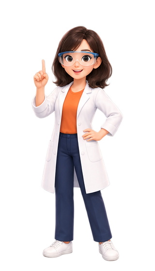

有機化合物基礎

曉臻老師的疑問
廚房裡的砂糖、麵粉、食鹽，看起來都是白色粉末——哪些是「有機物」？有沒有辦法用實驗分辨出來？先讀定義與四大例外，玩一下分類盲盒，再到下面的實驗台親手加熱看看。
有機物的定義與例外
早期迷思： 以為有機物必須由「生命體」製造。
打破迷思： 德國科學家烏拉意外用無機物加熱，人工合成出有機物「尿素 CO(NH2)2」。
打破迷思： 德國科學家烏拉意外用無機物加熱，人工合成出有機物「尿素 CO(NH2)2」。
現在的定義非常明確：只要含有「碳 (C)」的化合物，就是有機物！
必考四大例外 (含碳卻是無機物)
- 碳的氧化物： 如一氧化碳(CO)、二氧化碳(CO2)
- 碳酸鹽類： 如碳酸鈣(CaCO3)、小蘇打(NaHCO3)
- 氰化物： 如氰化鉀(KCN)
- 碳化物： 如碳化鈣/電石(CaC2)
【互動】烏拉的分類盲盒
請將下方的化學式，用手指拖曳到正確的分類區！
尿素
CH4
C2H5OH
CO2
CaCO3
KCN
🔥 實驗台：哪些是有機物？加熱看看
三支燃燒匙分別裝了砂糖、麵粉、食鹽。先猜哪些會變黑，再一支一支放到酒精燈上加熱。可以按按鈕，也可以直接點畫面上閃爍的黃框。

曉臻老師的實驗提示
📓 我的觀察紀錄
曉臻老師的挑戰
木頭放在空氣中燒，最後只剩一點灰；如果把木頭關起來、不讓它碰到空氣再加熱，會跑出哪些東西？下面有兩個實驗台：竹筷的乾餾，以及檢驗有機物裡有沒有碳和氫。
木材乾餾與元素檢驗
乾餾： 將物質「隔絕空氣加熱」的過程，可避免物質直接燃燒化為灰燼，藉此分離出有機物內部的成分。
乾餾三大產物：
- 氣體： CO、CH4、H2 (可燃) / CO2 (不可燃)
- 液體： 焦油 (深色黏稠)、醋酸 (透明酸性)
- 固體： 木炭 (黑色固體碳)
有機物元素檢驗法：
- 檢驗「碳(C)」：產生的 CO2 可使澄清石灰水變混濁。
- 檢驗「氫(H)」：產生的 H2O 可使藍色氯化亞鈷試紙變紅色。
📘 講義重點補充：乾餾的觀察與有機物的檢驗
乾餾時看到的煙
- 白煙：小水滴（水蒸氣遇冷凝結）
- 黑煙：碳顆粒
- 液體中的醋酸會使藍色石蕊試紙變紅色
用乾餾檢驗有機物
- 有機物都含碳，隔絕空氣加熱後會留下黑色的碳
- 碳能把黑色的氧化銅還原成紅色的銅：C ＋ 2CuO → 2Cu ＋ CO2
檢驗水的另一種方法
- 白色的無水硫酸銅遇到水會變成藍色，跟氯化亞鈷試紙一樣可以檢驗燃燒產生的 H2O
🥢 實驗台：竹筷的乾餾
把竹筷碎片放進試管，隔絕空氣加熱。收集管泡在冷水裡，讓跑出來的蒸氣凝結；導管口的氣體可以點點看。
曉臻老師的實驗提示
📓 我的觀察紀錄
🕯️ 實驗台：有機物裡有碳和氫嗎？
蠟燭的蠟是有機物。讓它燃燒，用乾燥的冷燒杯和澄清石灰水檢驗燒出來的東西。
曉臻老師的實驗提示
📓 我的觀察紀錄
曉臻老師的疑問
乙醇和甲醚都是 2 個碳、6 個氫、1 個氧，分子式一模一樣——為什麼一個是液體，一個卻是氣體？在下面的分子模型台，親手把 9 顆原子拆開、重新接一次。
同分異構物 (同材料不同靈魂)
定義： 兩種物質的「分子式相同」（擁有的原子種類和數量一樣），但是「原子排列的空間結構不同」。
因為結構改變，所以它們的物理性質與化學性質會完全不同！
經典代表：C2H6O
乙醇 (酒精)
- 常溫下為液體
- 溶於水、可殺菌
- 丟入鈉金屬會反應產氣
- 常溫下為液體
- 溶於水、可殺菌
- 丟入鈉金屬會反應產氣
甲醚
- 常溫下為氣體
- 難溶於水
- 丟入鈉金屬不會反應
- 常溫下為氣體
- 難溶於水
- 丟入鈉金屬不會反應
🧩 分子模型台：同樣 9 顆原子，接成兩種分子
桌上有 2 顆碳、6 顆氫、1 顆氧。按「組成」看原子怎麼接；用手指拖曳可以轉動分子，從不同角度看。